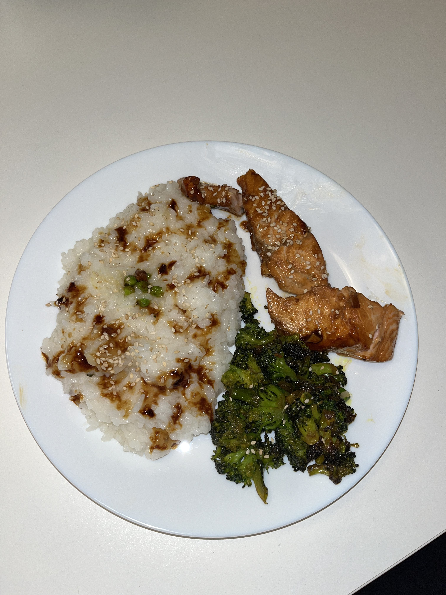

Asian Salmon

Ingrédients :
- Vinaigre de riz
- Sauce soja salée
- Miel
- Jus de citron
- Pavé de saumon
- Ail
- Grains de sésame
- Huile
Préparation :
- On prépare une sauce avec 4 cuillères à soupe de sauce soja, 2 cuillères à soupe de vinaigre de riz puis de miel, une bonne dose de jus de citron pour homogéniser le tout et l'ail bien hâché.
- On y plonge notre pavé de saumon pendant une vingtaine de minutes.
- On vient cuire notre saumon des deux côtés dans une poêle.
- Dressez en rajoutant des grains de sésame par dessus.
Mon avis :
J'aime beaucoup faire cette recette avec du riz blanc et une dose de légumes (je conseille les brocolis mais libre à vous) marinés dans la sauce qui reste pour rendre tout ça bien équilibré. C'est tout simplement délicieux ! Je vous mets aussi en lien la vidéo qui m'a inspirée pour ce repas :
Recette en vidéo